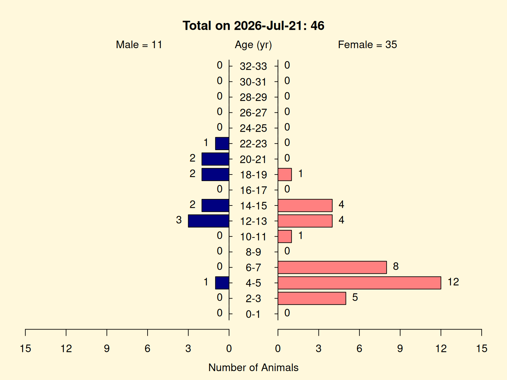
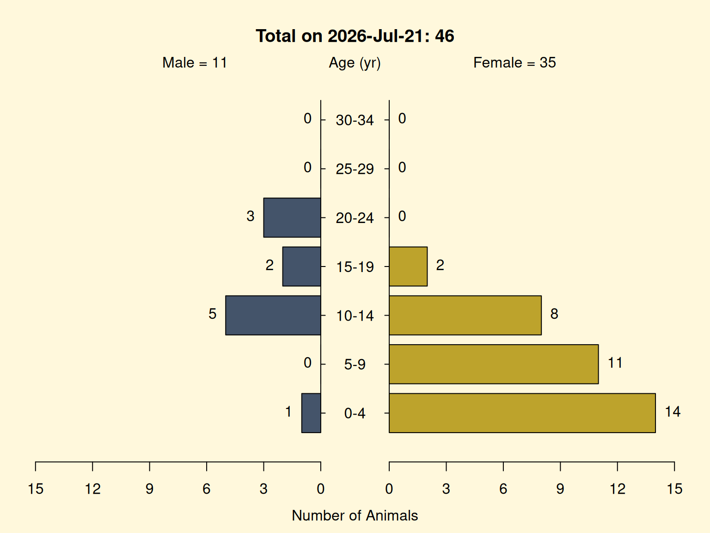

Overview
An age-sex pyramid is the standard way to picture a colony’s demographic structure. Animals are grouped into age bands, and each band is drawn as a pair of horizontal bars – males to the left, females to the right – so the length of a bar is the number of animals of that sex in that age band. The shape of the resulting pyramid tells a colony manager at a glance how many animals sit in each age cohort, whether the sexes are balanced, how many animals are of breeding age, and whether the colony is growing (a wide young base) or aging (a narrow base beneath a heavy middle).
getPyramidPlot() draws this plot from a pedigree. It uses the living animals (those with no exit date) that have a known age, and labels the figure with the plotted count and the date it was drawn. This article builds a pyramid from the qcPed data set that ships with the package; in practice you would first run the studbook through qcStudbook() (see the Studbook Quality Control article) so the sexes, dates, and ages are clean.
Setup
getPyramidPlot() draws with base graphics (via plotrix::pyramid.plot()), so each plotting call is the last expression in its code chunk. It runs no random simulation, and qcPed ships with a fixed age column, so the pyramid’s shape is reproducible; only the date in the title – which is “today” when the plot is drawn – changes between renders. No set_seed() is needed.
A first pyramid
qcPed is a 280-animal example pedigree. The pyramid is built from its living, aged animals:
getPyramidPlot(qcPed)
Of the 280 animals, 89 are living (no exit date), and 46 of those have a recorded birth date – and therefore a computable age – so 46 is what the pyramid places. The title reports that plotted total and the date the plot was drawn; the side labels give the male and female totals.
The gap between 89 living and 46 plotted is itself worth noticing: the other 43 living animals have no birth date, so they have no age and cannot be placed – and here they are all male. That badly distorts the picture. The plot shows 35 females to 11 males (about three to one female), but the living colony is actually male-majority – 54 males to 35 females. The apparent skew is not merely exaggerated, it is reversed. A pyramid only shows animals it can age, so missing birth dates can quietly invert it – a strong reason to quality-control the studbook first.
Reading the pyramid
Read each age band as a left/right pair: the left bar is the count of males in that band, the right bar the count of females. Stacking the bands youngest-at-the-bottom gives the demographic profile:
- a wide base (many animals in the youngest bands) means strong recruitment; a narrow base signals few young animals and a coming gap;
- the breeding-age bands (bars in the reproductive age range) show how many potential breeders are available, by sex;
- a lopsided pyramid – one sex’s bars consistently longer – flags a sex imbalance, though (as above) confirm it is real and not an artifact of animals that could not be aged.
Options
binWidth sets the age-band width: narrow bins show fine cohort structure, wide bins smooth it. colorScheme = "viridis" switches to a colorblind-friendly palette.
getPyramidPlot(qcPed, binWidth = 5, colorScheme = "viridis")
ageUnit = "months" is useful for young or short-lived cohorts (the bands and the title switch to months), and showCounts = FALSE hides the per-bar counts for a cleaner figure.
Key arguments
| Argument | Default | Meaning |
|---|---|---|
ped |
– | pedigree with at least sex and age columns (plus exit to select living animals) |
binWidth |
2 |
width of each age band, in ageUnits |
ageUnit |
"years" |
"years" or "months"
|
colorScheme |
"default" |
"default" (blue/pink) or "viridis" (colorblind-friendly) |
showCounts |
TRUE |
print the count on each bar |
ageLabelCex |
1.0 |
size of the age-band labels |
See also
- The Studbook Quality Control article – clean the studbook (sexes, dates, birth records) with
qcStudbook()before plotting, so the pyramid reflects the whole living colony. - The Building a Focal-Animal Pedigree Offline article – build a focal-animal pedigree from files with no database, via
getFocalAnimalPedFromFile(). - The Genetic Value Analysis article – rank a quality-controlled pedigree by mean kinship and genome uniqueness with
reportGV(). - The Forming Breeding Groups article – assemble genetically diverse breeding groups with
groupAddAssign(). -
getPyramidPlot()– the function documented here. -
runGeneKeepR()– the Shiny app, whose Age-Sex Pyramid tab draws this plot interactively.
Reference.
The age-sex pyramid is a standard demographic visualization; the plot here is drawn with plotrix::pyramid.plot(). The package itself derives from Vinson A, Raboin MJ (2015). “A Practical Approach for Designing Breeding Groups to Maximize Genetic Diversity in a Large Colony of Captive Rhesus Macaques (Macaca mulatta).” Journal of the American Association for Laboratory Animal Science 54(6):700-707.